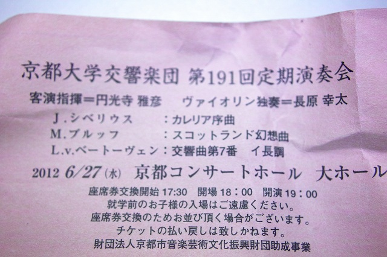
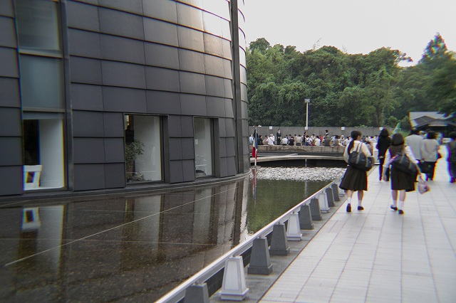
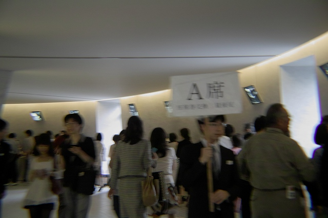
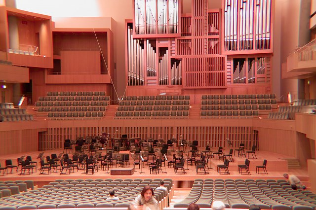
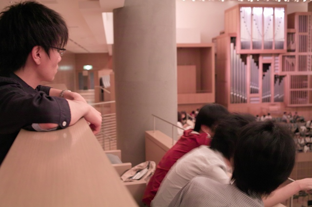
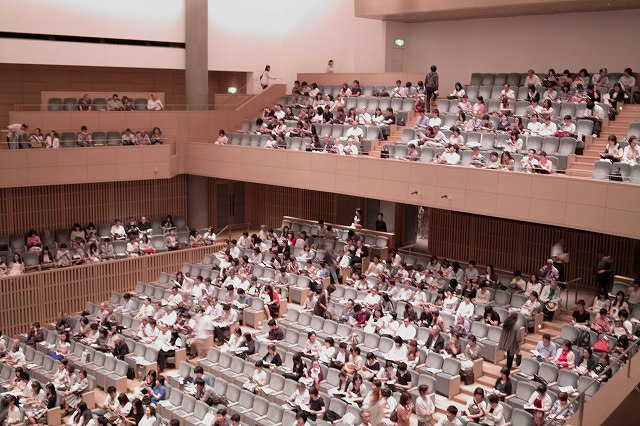

今年1月開催の計測研音楽鑑賞を本日開催。今回も会場は京都コンサートホールです。K岡さんの所属する楽団のコンサートなので全員出席です。就活内定、演奏会、研究、全てをこなしてK岡さんスゴイです。
K岡さんはスコットランド幻想曲を演奏
差し入れはI上くんとE川くん準備
開演前で人が一杯
チケット引替えの列
広いな
2階席の人達
B4は2階屋根の下、音は大丈夫？

適当な計算(250m×150m、100Hz)でも回折は複雑ですね
| ・音楽鑑賞の日 (H24.06.27) | |||
今年1月開催の計測研音楽鑑賞を本日開催。今回も会場は京都コンサートホールです。K岡さんの所属する楽団のコンサートなので全員出席です。就活内定、演奏会、研究、全てをこなしてK岡さんスゴイです。 |
|||
|

K岡さんはスコットランド幻想曲を演奏 |
差し入れはI上くんとE川くん準備 | ||
|

開演前で人が一杯 |

チケット引替えの列 | ||
|

広いな |

2階席の人達 | ||
|

B4は2階屋根の下、音は大丈夫？ |
適当な計算(250m×150m、100Hz)でも回折は複雑ですね | ||